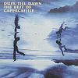

Celtic Lyrics Corner > Artists & Groups > Capercaillie > Dusk Till Dawn
|
 |
Dusk Till Dawn
(1998) |
| Tracks : |
1.
Coisich A Ruin
2. Miracle Of Being (Youth Remix) 3. The Tree 4. Ailein Duinn 5. Grace And Pride 6. The Whinney Hills Jigs 7. Claire In Heaven 8. Outlaws 9. Inexile (1998 Remix) 10. Seice Ruairidh 11. Kepplehall/25KTS 12. Tobermory 13. Waiting For The Wheel To Turn 14. Nil Si I nGra 15. Four Stone Walls 16. Dr. MacPhail's Reel 17. Breisleach (Live) |